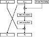

| Previous | Table of Contents | Next |
GOST is a block algorithm from the former Soviet Union [655,1393]. “GOST” is an acronym for “Gosudarstvennyi Standard,” or Government Standard, sort of similar to a FIPS, except that it can (and does) refer to just about any kind of standard. (Actually, the full name is Gosudarstvennyi Standard Soyuza SSR, or Government Standard of the Union of Soviet Socialist Republics.) This standard is number 28147-89. The Government Committee for Standards of the USSR authorized the standard, whoever they were.
I don’t know whether GOST 28147-89 was used for classified traffic or just for civilian encryption. A remark at its beginning states that the algorithm “satisfies all cryptographic requirements and not limits the grade of information to be protected.” I have heard claims that it was initially used for very high-grade communications, including classified military communications, but I have no confirmation.
Description of GOST
GOST is a 64-bit block algorithm with a 256-bit key. GOST also has some additional key material that will be discussed later. The algorithm iterates a simple encryption algorithm for 32 rounds.
To encrypt, first break the text up into a left half, L. and a right half, R. The subkey for round i is Ki. A round, i, of GOST is:
Figure 14.1 is a single round of GOST. Function f is straightforward. First, the right half and the ith subkey are added modulo 232. The result is broken into eight 4-bit chunks, and each chunk becomes the input to a different S-box. There are eight different S-boxes in GOST; the first 4 bits go into the first S-box, the second 4 bits go into the second S-box, and so on. Each S-box is a permutation of the numbers 0 through 15. For example, an S-box might be:

Figure 14.1 One round of GOST.
In this case, if the input to the S-box is 0, the output is 7. If the input is 1, the output is 10, and so on. All eight S-boxes are different; these are considered additional key material. The S-boxes are to be kept secret.
The outputs of the eight S-boxes are recombined into a 32-bit word, then the entire word undergoes an 11-bit left circular shift. Finally, the result XORed to the left half to become the new right half, and the right half becomes the new left half. Do this 32 times and you’re done.
The subkeys are generated simply. The 256-bit key is divided into eight 32-bit blocks: k1, k2,..., k8. Each round uses a different subkey, as shown in Table 14.1. Decryption is the same as encryption with the order of the kis reversed.
The GOST standard does not discuss how to generate the S-boxes, only that they are somehow supplied [655]. This has led to speculation that some Soviet organization would supply good S-boxes to those organizations it liked and bad S-boxes to those organizations it wished to eavesdrop on. This may very well be true, but further conversations with a GOST chip manufacturer within Russia offered another alternative. He generated the S-box permutations himself, using a random-number generator.
| Table 14.1 Use of GOST Subkeys in Different Rounds | ||||||||||||||||
|---|---|---|---|---|---|---|---|---|---|---|---|---|---|---|---|---|
| Round: | 1 | 2 | 3 | 4 | 5 | 6 | 7 | 8 | 9 | 10 | 11 | 12 | 13 | 14 | 15 | 16 |
| Subkey: | 1 | 2 | 3 | 4 | 5 | 6 | 7 | 8 | 1 | 2 | 3 | 4 | 5 | 6 | 7 | 8 |
| Round: | 17 | 18 | 19 | 20 | 21 | 22 | 23 | 24 | 25 | 26 | 27 | 28 | 29 | 30 | 31 | 32 |
| Subkey: | 1 | 2 | 3 | 4 | 5 | 6 | 7 | 8 | 8 | 7 | 6 | 5 | 4 | 3 | 2 | 1 |
More recently, a set of S-boxes used in an application for the Central Bank of the Russian Federation surfaced. These S-boxes are also used in the GOSTone-way hash function (see section 18.11) [657].They are listed in Table 14.2.
| Previous | Table of Contents | Next |
){kind=link}
){kind=link}